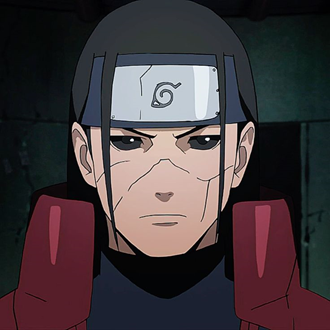
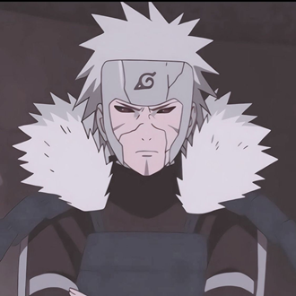
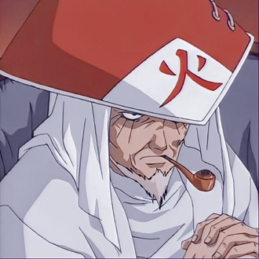
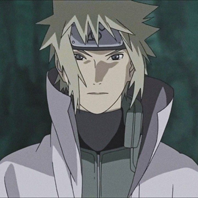
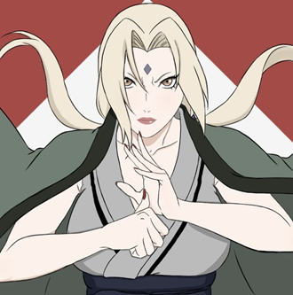
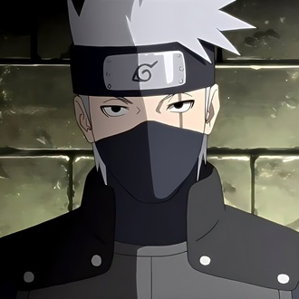
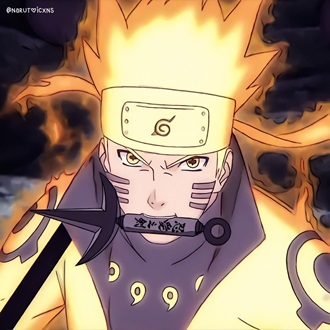

-
Primeiro Hokage
Descrição
Hashirama Senju (千手柱間) foi o Primeiro Hokage, fundador de Konoha, irmão mais velho de Tobirama Senju, e avô de Tsunade e Nawaki. Ele era conhecido como deus dos shinobis por ter a Kekkei Genkai do estilo madeira (mokuton).
-
Segundo Hokage
Descrição
Tobirama Senju (千手扉間, Senju Tobirama) foi o Segundo Hokage (二代目火影, Nidaime Hokage; literalmente significa: "Segunda Sombra do Fogo") de Konohagakure. Ele vem do clã Senju, que, junto com o clã Uchiha, fundaram a primeira vila shinobi. Tobirama também viria a ser o líder do seu próprio time.
-
Terceiro Hokage
Descrição
Hiruzen Sarutobi foi o Terceiro Hokage de Konoha. Era muito habilidoso e podia até mesmo ser considerado um gênio que aparece uma vez a cada geração. Assim como Hashirama, ele também foi aclamado como Deus Shinobi.
-
Quarto Hokage
Descrição
Minato Namikaze era um garoto calmo e sensível que era tido por sua colega de classe — e futura esposa — Kushina Uzumaki como “fraco e esquisito”. Ele sonhava em um dia conquistar o respeito de todos na aldeia e assumir o posto de hokage, algo que acabou realizando antes mesmo de completar 24 anos de idade.
-
Quinta Hokage
Descrição
Embora seja considerada a kunoichi mais poderosa do mundo e a maior ninja médica, Tsunade abandonou a vida de shinobi por muitos anos em busca de outros objetivos. Ela acaba sendo convencida a voltar para Konoha e se torna sua Quinta Hokage (五代目火影, Godaime Hokage; Literalmente significa "Quinta Sombra do Fogo").
-
Sexto Hokage
Descrição
Kakashi Hatake é um ninja da Vila Oculta da Folha, onde é reverenciado como um dos mais poderosos de sua geração. Conhecido por seu icônico Sharingan que ostenta em seu olho esquerdo e por ter copiado mais de mil jutsos, Kakashi é um homem de poucas palavras, mas de ações decisivas e precisas.
-
Sétimo Hokage
Descrição
Naruto consegue superar o ódio do Nove-Caudas e se tornar parceiro de sua Bijuu ao longo da Quarta Guerra Mundial Shinobi, da qual anos depois, Naruto realiza seu sonho de ser reconhecido por todos e se tornar o Sétimo Hokage (七代目火影, Nanadaime Hokage; literalmente significa: "Sétima Sombra do Fogo").